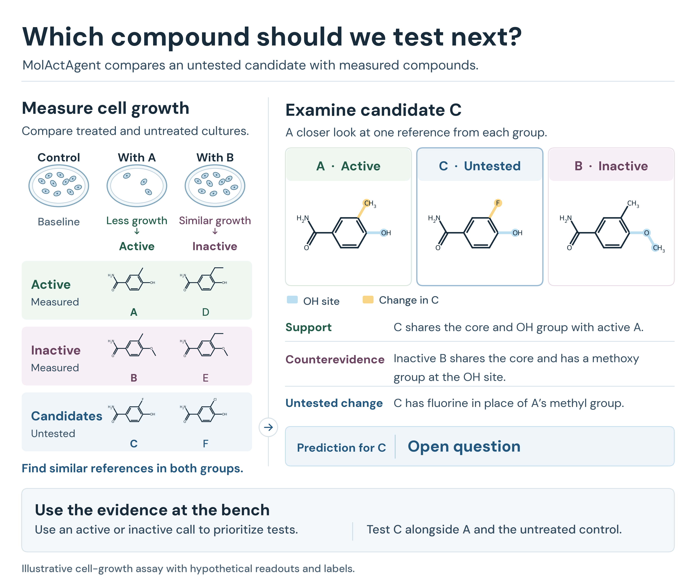

Which compound would you test next?
You have a few measured compounds, several candidates and a limited number of assays. MolActAgent is an open-source AI agent that compares each candidate with compounds that were active and inactive in your assay. See which candidates have support for testing and where an experiment could resolve a doubt.
What can I decide from a handful of results?
For each candidate, see what the evidence supports in your assay. Start with the question you face at the bench.
Keep the chemistry behind the call.
MolActAgent brings together the candidate, similar active and inactive references, and the meaning of activity in your experiment. A language model weighs their structural and property differences. You can follow the resulting call back to the compounds, including evidence that points the other way.
Read the method in detail
Bring your assay.
You need the structures of your candidates, active and inactive examples from the same experiment and a description of how you assign the labels. New predictions use a compatible LLM API.